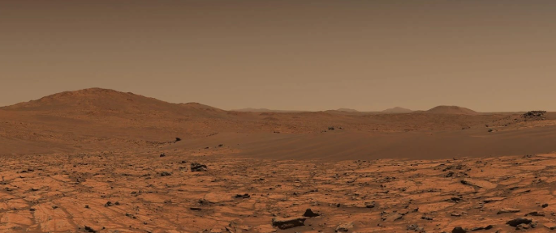
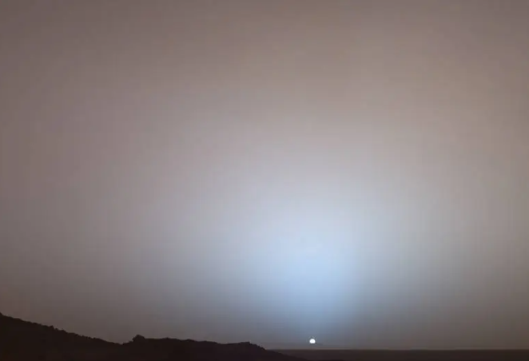
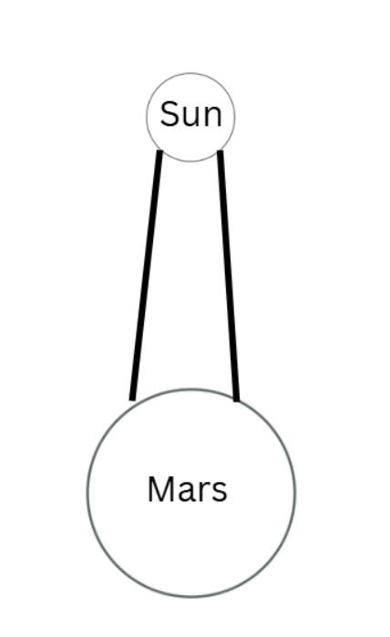
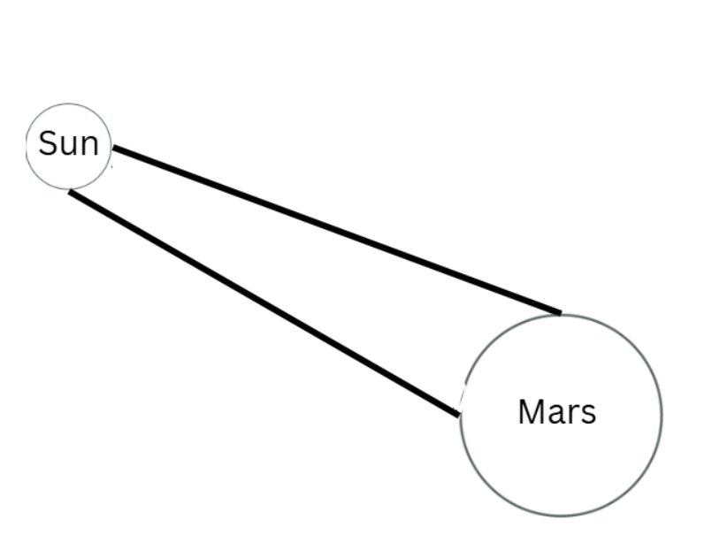

Our air is made mostly of nitrogen and oxygen molecules. When sunlight enters the atmosphere, it doesn't just pass through — it hits these tiny molecules and gets scattered in all directions.
But not all colors scatter equally. Sunlight is actually a mix of all colors, and each color has a different wavelength — red has a long wavelength, blue and violet have short ones. Short wavelengths scatter much more strongly. This is described by Rayleigh's law:
k is not a single universal number. It depends on the properties of the particles that scatter the light.
One important factor is polarizability. When light passes by a molecule, its electric field pushes on the molecule's electrons and makes them move slightly. If the electrons shift easily, the molecule interacts more strongly with the light. This property is called molecular polarizability (α). The strength of scattering depends strongly on it — roughly:
But polarizability is not the only thing involved. The value of k also depends on the number of molecules in the air (how dense the atmosphere is) and on the optical properties of the gas, such as its refractive index.
Because different gases have different polarizabilities and optical properties, they scatter light differently. Nitrogen and oxygen — which make up most of Earth's atmosphere — therefore determine how sunlight is scattered in our sky.

So why isn't the sky violet? Violet has an even shorter wavelength than blue, so it actually scatters more. (Honestly, some ozone also absorbs violet light.) But two things work against it: the Sun emits very little violet light to begin with — as you can see in the solar spectrum below, the peak is around green-yellow, and violet sits on the weak tail end. On top of that, our eyes are simply less sensitive to violet than blue.

So blue light wins — it scatters strongly, there's plenty of it from the Sun, and our eyes pick it up well. Wherever you look up, scattered blue light is reaching your eyes from all directions.
That's why the sky is blue.
At sunset, sunlight travels through a much longer path of atmosphere before reaching your eyes. By the time it arrives, the blue light has already been scattered away long before it reaches you. Only red and orange survive that long journey — they don't scatter much.
They travel in one direction (they scatter a little, but very little), and when the Sun is at a low angle on the horizon, these straight-traveling waves pass through the sky at that same low angle — lighting up everything in that direction in warm reds and oranges. That's why both the Sun itself and the sky around it glow red and orange at sunset and sunrise.

There is a type of scattering called Mie scattering. Unlike Rayleigh scattering, which happens with tiny gas molecules, Mie scattering happens with bigger particles — like dust.
Mars has only 1% of Earth's atmosphere, but it has something Earth doesn't — iron oxide dust, basically rust, constantly kicked up into the air by frequent dust storms and carried across the whole planet. This dust stays suspended in the atmosphere for long periods. When light hits these dust particles, the iron oxide absorbs more blue and green light than red and orange — but some blue light survives and can be scattered forward, producing a faint bluish halo around the Sun. That's simply how colors work — every material absorbs some wavelengths and reflects others.
But there's more. Because the dust particles are large, light doesn't hit the whole particle at the same moment — it reaches one side before the other. This makes different parts of the particle vibrate out of sync with each other. When out-of-sync vibrations re-emit light, some directions cancel out and some add up — this is called interference. The forward direction ends up with the most light, and sideways and backward directions get less.
So the dust particles scatter orange-reddish light mostly sideways across the atmosphere — lighting up the whole Martian sky in orange.

Because at low angles, sunlight needs to travel much more distance through the atmosphere.
When the Sun is high, its light travels a short distance to reach you — most of it arrives direct and bright (see Figure 1). A blue halo exists even then, but it's completely invisible against the overwhelming glare of direct sunlight.

At low angles, the path is much longer (see Figure 2). Along that path, most of the red and orange light gets scattered sideways by dust and never reaches you. The Sun itself becomes noticeably dimmer. Now the blue light — which dust scatters more strongly forward — is no longer drowned out. It reaches the observer, forming a visible bluish halo around the Sun. The rest of the sky stays orange-ish.

Note: the Sun is obviously much bigger than Mars — I drew it this way as if we're observing from the side of Mars, to show the angle of the light path.
So the Martian sunset is the opposite of Earth's — blue near the Sun, orange everywhere else. The same physics, just with different particles doing the work.
Why do dust particles scatter blue forward but red and orange sideways? This comes from solving Maxwell's equations for spherical particles — primarily depending on the ratio of wavelength to particle size and the particle's refractive index. The pattern is real and experimentally confirmed.
- What's in the atmosphere — which gases, dust, or chemicals
- How dense the atmosphere is — thick or thin (Dense atmosphere → lots of particles → light scattered many times → strong effect. Thin atmosphere → few particles → light barely scattered → weak effect.)
- The size of the particles — small molecules → Rayleigh scattering. Large particles → Mie scattering.
- All of this is one rule in disguise — light interacting with matter (gas, dust, liquid) decides what color we see, everywhere in the universe.
When blue light gets scattered by air molecules and doesn't reach your eyes, it doesn't disappear. It keeps traveling in whatever new direction it was scattered into — some of it reaches other people's eyes, some hits the ground, and some exits Earth's atmosphere entirely and travels into space.
In fact, any light that exits Earth — or any other planet, star, or object in the Universe — and doesn't get absorbed or scattered, just keeps traveling forever at 300,000 km/s, until it hits something. In empty space, nothing slows light down or stops it. It just keeps going.
A photon — a particle of light — is essentially immortal unless something absorbs it. It can get scattered (redirected) or absorbed (destroyed), but if neither happens, it travels forever. The Universe is mostly empty space, so a lot of photons do exactly that.
One last thing: the Universe is expanding. Light traveling across it for billions of years slowly gets stretched by that expansion — its wavelength gets longer, shifting toward red. This is called redshift. So a blue photon traveling long enough gradually becomes a red photon, then infrared, then a radio wave. Still existing — just stretched.
Some photons from the early Universe are still traveling today, 13.8 billion years later.